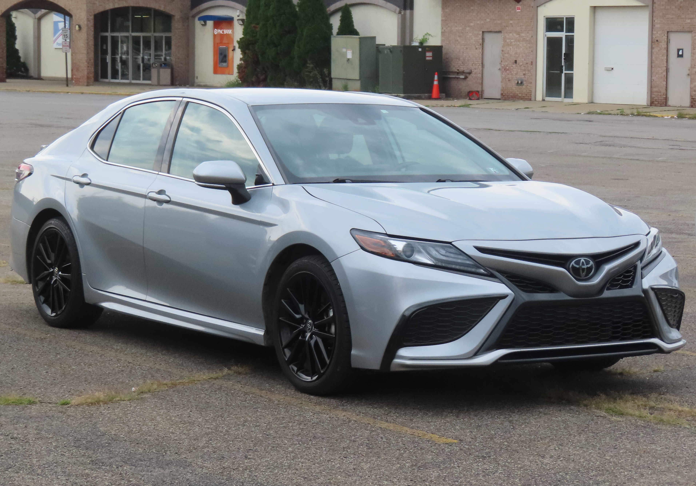

Покупка автомобиля в США: автокредит, страховка и общая стоимость — практическая справка для иммигрантов
Как покупают машину в США: новая или подержанная, у дилера или у частного лица, автокредит (APR, срок, первоначальный взнос), страховка и общая стоимость владения. Официальные источники: Бюро финансовой защиты потребителей (CFPB), Федеральная торговая комиссия (FTC), Институт страховой информации (III) и DMV Калифорнии. Это справка, а не финансовый совет.

Для большинства людей в США автомобиль необходим для работы, учёбы и повседневной жизни. Покупка состоит из нескольких этапов: выбор подходящей машины, её проверка, решение о способе оплаты (наличные или кредит), уплата налогов и сборов, регистрация и оформление страховки. Ниже приведены ключевые факты, основанные на официальных источниках — CFPB, FTC, III и DMV Калифорнии.
Новая или подержанная; у дилера или у частного лица
Купить можно у дилера или у частного продавца. По данным FTC, дилеры обязаны размещать ярлык Buyers Guide на каждой продаваемой подержанной машине. Новый автомобиль теряет стоимость (амортизация) быстрее, поэтому многие иммигранты выбирают подержанный; однако у подержанной машины выше риск неисправностей, что делает проверку важной.
Чек-лист проверки подержанной машины
FTC рекомендует перед покупкой: (1) получить отчёт об истории автомобиля по VIN — официальная система NMVTIS (vehiclehistory.gov) показывает данные о титуле, страховых убытках и статусе salvage; (2) проверить машину у независимого механика — отчёт об истории не заменяет независимый осмотр; (3) прочитать ярлык Buyers Guide. Если отмечена графа 'As Is — No Dealer Warranty' (как есть, без гарантии), дилер не оплачивает ремонт — зафиксируйте все устные обещания письменно на ярлыке.
Как работает автокредит
Автокредит состоит из основной суммы (principal), процентной ставки и срока. По данным CFPB, APR (годовая процентная ставка) — это годовая стоимость заимствования, отражающая не только проценты, но и сборы; чем выше APR, тем больше вы платите. Ежемесячный платёж зависит от суммы кредита, APR и срока.
Первоначальный взнос (down payment) — часть цены, уплачиваемая сразу (наличными или стоимостью сдаваемой в зачёт машины). По CFPB, чем больше первоначальный взнос, тем меньше сумма кредита и его общая стоимость.
Как кредитный рейтинг влияет на ставку
По данным CFPB, кредитор учитывает несколько факторов при определении ставки: кредитный рейтинг и историю, доход и долги, сумму и срок кредита, размер первоначального взноса относительно стоимости машины, а также новая машина или подержанная. Чем выше кредитный рейтинг, тем, как правило, ниже ставка.
Получите предварительное одобрение в банке или кредитном союзе до дилера
CFPB советует получить предварительное одобрение (pre-approval) в банке или кредитном союзе до визита к дилеру. Pre-approval — это предложение с указанием ставки, срока и максимальной суммы кредита. Сравнивайте предложения нескольких кредиторов, так как они не обязаны предлагать лучшую ставку, а финансирование через дилера иногда дороже банковского.
Длинные кредиты и риск 'upside down'
Длинные кредиты на 72–84 месяца снижают ежемесячный платёж, но по данным CFPB означают больше процентов в сумме и повышают риск отрицательного капитала (negative equity) — когда долг больше рыночной стоимости машины. Это называют 'upside down': при продаже или обмене машины вы не сможете полностью покрыть долг. Риск растёт, когда стоимость машины падает быстрее, чем уменьшается остаток кредита.
Без SSN: кредит по ITIN
Иммигранты без SSN (номер социального страхования) часто ищут автокредит по ITIN (номер налогоплательщика, выдаваемый IRS). Некоторые кредитные союзы и отдельные кредиторы принимают ITIN. У новоприбывших часто мало или нет кредитной истории в США ('тонкое' кредитное досье), поэтому кредиторы больше учитывают доход, стабильность работы и первоначальный взнос. Такие кредиты могут иметь более высокую ставку и больший требуемый взнос. Уточняйте точные условия у каждого кредитора.
Налоги и сборы
Помимо цены есть дополнительные налоги и сборы: налог с продажи/использования (sales/use tax), сборы за титул и регистрацию, а также сбор дилера за оформление документов. Например, по данным DMV Калифорнии, налог на использование составляет 7,25%–10,25% в зависимости от города и округа покупателя (показатель 2025–2026 годов). В Калифорнии о смене владельца нужно сообщить в DMV в течение 10 дней.
Регистрация и проверка smog
Машину нужно зарегистрировать, а титул оформить на имя владельца, чтобы законно ездить. В Калифорнии для большинства машин требуется проверка smog (выбросов); по данным DMV, бензиновым машинам моложе 4 лет сертификат не нужен, но оплачивается сбор smog, а при покупке у дилера машины старше 4 лет дилер обычно обязан предоставить сертификат smog. Правила различаются по штатам.
Страховка обязательна почти везде
По данным III, практически все штаты требуют страховку ответственности (liability) до того, как можно законно водить — Массачусетс был первым в 1927 году, затем присоединились 48 штатов и округ Колумбия. Каждый штат устанавливает минимальные лимиты, часто в формате '25/50/25' (телесные повреждения на человека / на аварию / ущерб имуществу). По состоянию на 2022 год около 14% водителей США — примерно каждый седьмой — не имели страховки, поэтому её наличие важно.
Виды страховки
По данным III, основные покрытия: ответственность (liability) — платит, когда вы причинили телесные повреждения или ущерб имуществу другим (обязательна почти во всех штатах); столкновение (collision) — покрывает ущерб вашей машине в аварии, обычно с франшизой $250–$1 000; комплексное (comprehensive) — покрывает ущерб не от столкновения, например кражу, пожар, наводнение, падение предметов и столкновение с животным. Чем выше франшиза, тем ниже страховой взнос.
Покрытие от незастрахованных/недостаточно застрахованных водителей защищает вас, когда у виновника нет страховки или её не хватает. Страховка GAP оплачивает 'разрыв' между вашим долгом и рыночной стоимостью машины, так как collision/comprehensive покрывают только рыночную стоимость, а машины быстро дешевеют. SR-22 — это не вид страховки, а подтверждение финансовой ответственности, подаваемое вашим страховщиком; по данным DMV Калифорнии оно обычно требуется после серьёзных нарушений, таких как DUI (вождение в нетрезвом виде), и должно сохраняться 3 года.
Как определяется страховой взнос
По данным III, страховой взнос (premium) отражает профиль риска водителя. Где закон позволяет, учитываются такие факторы, как возраст и история вождения. Взнос также зависит от цены машины, стоимости её ремонта, общего показателя безопасности и вероятности угона.
Общая стоимость владения
Цена — лишь часть расходов. Общая стоимость владения также включает топливо, регулярное обслуживание и ремонт, страховку, регистрацию и амортизацию. Планируя бюджет, учитывайте все эти постоянные расходы, а не только ежемесячный платёж по кредиту.
Важное примечание
Эта статья даёт общую информацию и не является финансовым или юридическим советом. Точные ставки, лимиты, налоги и условия различаются в зависимости от кредитора, страховщика, штата и времени. Приведённые выше изменяющиеся во времени цифры отражают 2025–2026 годы. Перед решением проконсультируйтесь с официальными источниками и квалифицированным специалистом.
Источники
- CFPB — Shopping for your auto loan
- CFPB — Auto loans key terms
- CFPB — How does a lender decide my auto loan interest rate?
- CFPB — Auto loan answers (negative equity)
- FTC — Buying a Used Car From a Dealer
- FTC — Used Cars (consumer advice)
- Insurance Information Institute — Auto insurance basics
- Insurance Information Institute — Compulsory auto / uninsured motorists
- California DMV — Registering a vehicle purchased from a dealer
- California DMV — Smog inspections
- California DMV — Financial responsibility (SR-22)